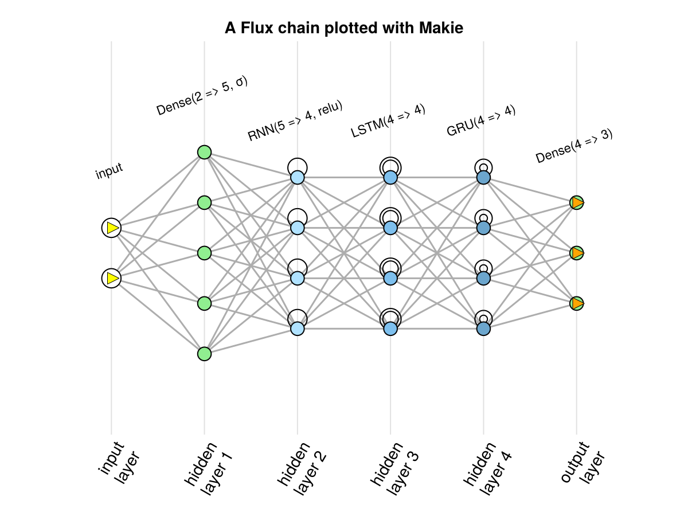
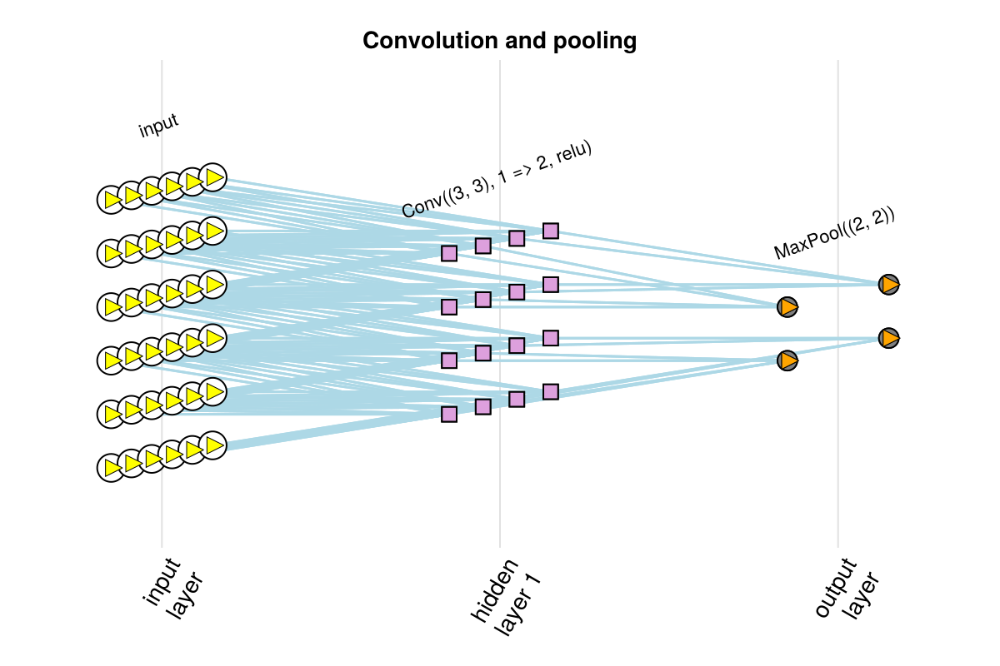
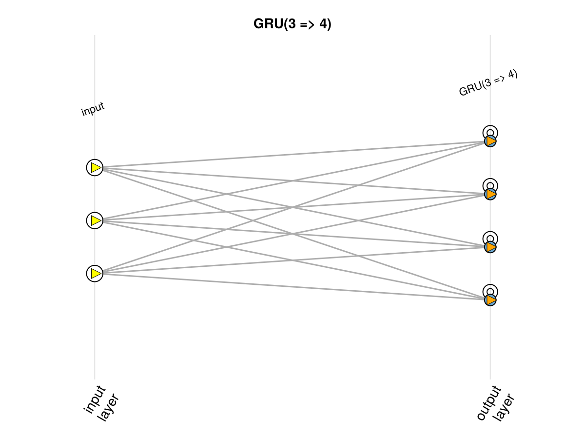
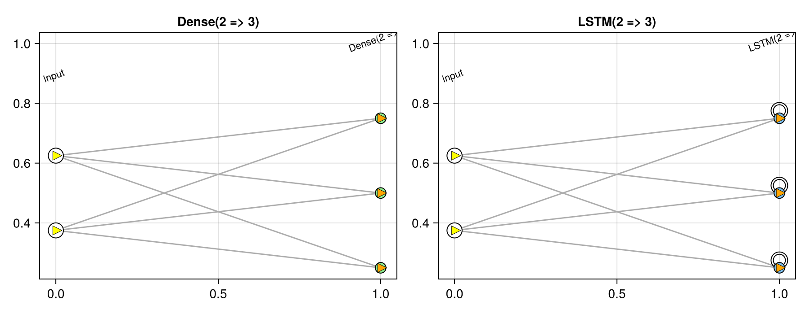

Plotting with Makie
ChainPlots plots with Makie.jl as well as with Plots.jl, through a package extension loaded with Makie. Load one of the Makie backends, such as CairoMakie or GLMakie, and a ChainGraph is plotted with Makie's plot, with the same markers and colors as with Plots.jl:
using Flux
using CairoMakie
using ChainPlots
nnr = Chain(Dense(2 => 5, σ), RNN(5 => 4, relu), LSTM(4 => 4), GRU(4 => 4), Dense(4 => 3))
plot(chaingraph(nnr); axis = (; title = "A Flux chain plotted with Makie"))
The attributes of the recipe are the same as with Plots.jl, connection_color, neuron_colors and neuron_shape, plus fontsize for the names of the layers. The attributes of the axis and of the figure are given with axis and figure, as usual with Makie:
cg = chaingraph(Chain(Conv((3, 3), 1 => 2, relu), MaxPool((2, 2))), (6, 6, 1, 1))
plot(cg; connection_color = :lightblue, axis = (; title = "Convolution and pooling"), figure = (; size = (600, 400)))
plotchain
plotchain works with Makie too: plotchain(m, input; kwargs...) is plot(chaingraph(m, input); kwargs...), and returns a Makie.FigureAxisPlot. It uses whichever of Plots.jl and Makie.jl is loaded. This documentation loads both, in different pages, so here the backend is chosen explicitly with ChainPlots.MakieBackend(); with only Makie loaded, plotchain(m) is enough.
plotchain(ChainPlots.MakieBackend(), GRU(3 => 4); axis = (; title = "GRU(3 => 4)"))
Several networks in one figure
plotchain! adds a network to an axis, or plot! adds a ChainGraph, so several networks can share a figure:
fig = Figure(size = (900, 350))
ax1 = Axis(fig[1, 1], title = "Dense(2 => 3)")
plot!(ax1, chaingraph(Dense(2 => 3)))
ax2 = Axis(fig[1, 2], title = "LSTM(2 => 3)")
plot!(ax2, chaingraph(LSTM(2 => 3)))
fig
When the axes are created first, as here, the axis decorations of the recipe, such as the names of the layers on the horizontal axis, are not applied; they are only set on an axis the plot creates itself.